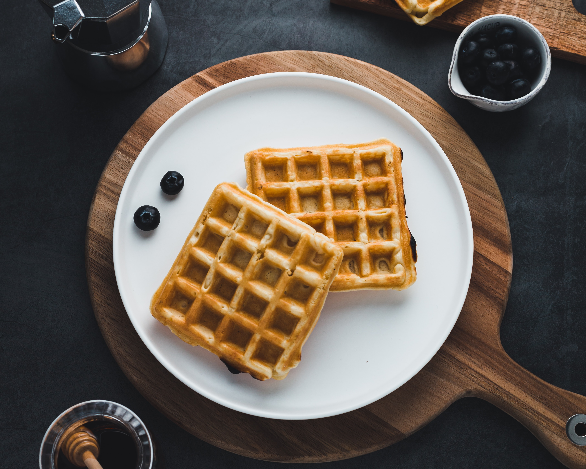

Waffle Clássico

Delicias de waffles
Ingredientes
- 2 xicaras de farinha de trigo
- 2 xicaras de leite
- 2 dois ovos
- 1 fio de azeite
- uma pitada de sal
- 2 colheres de açucar
Modo de preparo
- pegue o liquidificador
- bata todos os ingredientes
- depois adicione na maquina de waffles
- por fim personalize como desejar .
Informações adicionais
Você poderá servir estes waffles com geleia no café da manhã